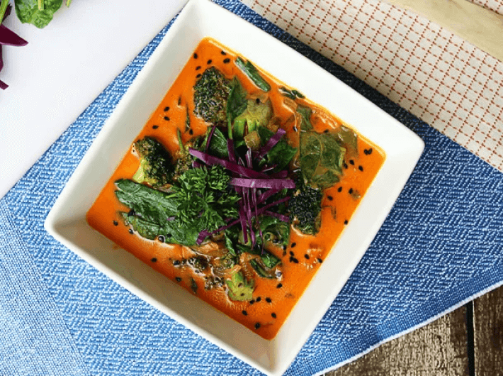

Rotes Kokos-Curry (V+)
(15 Min, 2 Port., F: 80 g, K: 13 g, E: 8 g)

Zutaten
- 480 g Brokkoli, 400 g Spinat, 3 EL Kokosöl, 1 Zwiebel, 2 Knoblauchzehen, 2 TL Ingwer, 6 TL Soja-Sauce, 2 TL rote Currypaste, 400 g Kokosmilch
Vorbereitung
- Zwiebeln und Knoblauch klein hacken. Brokkoli in Röschen zerkleinern. Ingwer klein hacken.
Braten
- 1 EL Kokosöl in einer Pfanne erhitzen. Zwiebeln dazugeben und scharf anbraten. Knoblauch dazugeben bis die Zutaten angebräunt sind.
- Hitze reduzieren und Brokkoli dazu geben.
- Wenn Brokkoli etwas weicher geworden ist, das Gemüse an den Rand der Pfanne schieben und Currypaste dazugeben. Ungefähr 1 Minute anbraten.
- Spinat dazugeben und kurz anbraten. Sobald der Spinat abschlafft, Kokosmilch und 2 EL Kokosöl dazu geben.
- Alles gut verrühren und Sojasauce und Ingwer dazu geben. 5-10 Minuten köcheln lassen, je nach gewünschter Dicke des Currys.
Originalrezept unter: Ruled.me